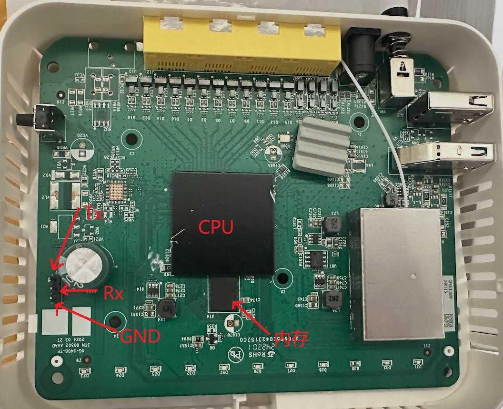

网页 U-Boot 指南
把 Airoha 方案的光猫（支持机型）换成能用浏览器刷机、救砖的 U-Boot，以及换好之后怎么用。跟着步骤做即可，不需要懂 U-Boot 或 Linux。
★这个 U-Boot 和恢复页都是业余时间做的，全部开源、没有任何收费。觉得有用的话，去 GitHub 点个 Star——这是对作者最好的支持。Loong1996/ImmortalWrt-Airoha →1.1判断你在哪一步
| 看到 | 说明 | 走哪条 |
|---|---|---|
| 第三方 tcboot | 不用拆机、不用串口 | 不拆机迁移 |
| 原厂系统 | 需要接一次串口 | 第 2 章 首次迁移 |
| 网页 U-Boot | 只要浏览器 | 第 3 章 日常使用 |
1.2支持机型
网页 U-Boot 本身不认机型，同一份页面服务所有开了它的板子。下表是已知能用的机器，以及下载固件时该选哪一个。
| 机型 | SoC | 下载时选 | 状态 | 备注 |
|---|---|---|---|---|
| Nokia XG-040G-MD | Airoha AN7581 | XG-040G-MD | 实机验证 | 本教程的截图与串口日志都来自它 |
| Nokia XG-040G-MF | Airoha AN7583 | XG-040G-MF | 实机验证 | 与 MD 共用分区布局与恢复页，步骤完全相同 |
| Nokia XG-140G-MD | Airoha AN7581 | XG-040G-MD | 实测可用 | 同一套参考设计，直接用 XG-040G-MD 的固件；设备详情页会显示为 XG-040G-MD |
| Nokia XG-140G-MF | Airoha AN7583 | XG-040G-MF | 实测可用 | 同一套参考设计，直接用 XG-040G-MF 的固件；设备详情页会显示为 XG-040G-MF |
| Nokia XG-040G-TF | Airoha AN7581 | XG-040G-TF | 实机验证 | 硬件与 MD 相同，但芯片烧了安全启动密钥，BL2 和 U-Boot 都要带证书：必须用 XG-040G-TF 自己的两个引导文件，不能用 MD 的。面板灯与网口灯是蓝色的（光信号灯仍是红的） |
| ZNXT ZN504XG-D | Airoha AN7581 | ZN504XG-D | 实机验证 | 专用固件：闪存与指示灯（蓝色）都和 MD 不同，没有 USB；出厂 MAC 在 factory 卷，写回原厂 reservearea 备份即可 |
| ZNXT ZN515XG-D | Airoha AN7581 | XG-040G-MD | 实测可用 | 同上，直接用 XG-040G-MD 的固件 |
| FiberHome HG5382A | Airoha AN7581 | HG5382A | 待实机验证 | 专用固件：闪存是并口 NAND（其它机型都是 SPI NAND），BL2、U-Boot、内核都是它自己的；指示灯蓝色。原厂备份请在原厂系统里做；出厂 MAC 在 factory 卷，用 pbs05 的 fiberhome-factory 把原厂备份转成 factory.bin 写进去。从 pbs05 迁来的，迁移前先在 pbs05 的恢复页下载 factory 卷。从原厂或 pbs05/uboot-an758x 迁移过来，第一次进网页 U-Boot 必须勾「重建 UBI」，连同固件与 FIP 一次写完：它们留下的 UBI 用的是另一种 ECC 码字，这份 U-Boot 读不出，只写 FIP 的话开机会反复报 ECC error |
其他 AN7581 参考设计的机器大概率也能直接用 MD 固件，试过的请到仓库 Issues 或 QQ 群 1092754041 反馈。
1.3下载固件
只列出最近一次 ubi 自适应内存构建。点文件名直接下，文件名不用改，网页会按名字做核对。
1.4准备工作
- USB 转 TTL 串口模块仅首次迁移3.3V 电平的那种（不是 RS232），CH340 一类都行，带 3 根杜邦线。之后日常用网页就不再需要它。
- 支持 Xmodem 发送的串口终端仅首次迁移Windows 上 MobaXterm、SecureCRT、Xshell 都自带「发送文件 → Xmodem」；macOS / Linux 用
minicom，或装lrzsz后在screen里用sx。 - 先做一次整机 flash 备份仅首次迁移首次迁移会清空原厂分区，其中
ri（MAC / 序列号）和bosa（光模块校准）是这台机器独有的（ZN504XG-D 是reservearea）、没有第二份。接上恢复页之后在「2.3 原厂数据备份」里整片下下来。备份的all_flash.bin以后能在网页里整片刷回原厂。
2.1接串口，传引导文件
先不要插网线。只有这一次需要打开机壳接串口，传完两个引导文件之后，剩下的和以后的每一次都只用浏览器。
机器是 tcboot 引导，则看不拆机迁移 U-Boot 教程。
找到串口调试口，接好线
拆开机壳，主板上电解电容旁边有一排焊盘，标着 Tx Rx GND：

接线是「交叉」的——模块的 TX 接主板的 Rx，模块的 RX 接主板的 Tx，GND 接 GND。不同批次位置可能略有出入，以实物丝印为准：
模块
调试口
打开串口终端
端口选 USB-TTL 模块对应的那个（Windows 是 COMx，macOS / Linux 是 /dev/tty.usb… 或 /dev/ttyUSB0），参数 115200 · 8 · 无校验 · 1 停止位 · 无流控。这时候先别接路由器电源。
长按 reset 并同时上电，看到 Press x 立刻按 x
▲ 前面那一大段启动日志不用看，就盯着 Press x 这一行
依次 Xmodem 发送两个文件
先发 …-preloader.bin。传完路由器自动重启一次，很快刷出第二个提示，再按一次 x，出现 C 后发送 …-bl31-uboot.fip：
▲ 满屏 MRW 是内存训练，属于正常；MF 机器这里显示 an7583
fip 传完新 U-Boot 就跑起来了，用下面任一种方式进恢复页：
| 一直按住 reset | 上电时按下的 reset 一直别松，等面板灯呈流水效果再松手（约 15 秒） |
| 在菜单里选第 9 项 | 启动菜单出来时按 9，选 Start web recovery server |
串口出现下面这行，就是恢复页起来了：
2.2连上恢复页
首次迁移接着上一步往下做；日常使用进了恢复页之后，也照这四步连。
等面板灯呈流水效果，再插网线
流水就是恢复页已经起来了。
插 LAN 2、3、4 任意一个，不要插 LAN 1
LAN 1 是 2.5G 口，U-Boot 里没有它的驱动（为什么），插上什么都不会发生。别的机型哪个口有效不一定一样，逐个口试，能拿到下面那个地址的就是对的。
电脑设成自动获取 IP，拿到 192.168.1.100 就对了
恢复页自带 DHCP，不用手动配地址。
浏览器打开 http://192.168.1.1
是 http:// 不是 https://。在「设备详情 → 网络」里改过地址并保存了的，用你改的那个；没保存的，断电重来就回到 192.168.1.1（见接进已有网络）。
打不开？看「出问题了」第一条。
2.3原厂数据备份可选项
上两步只把引导送进内存，闪存还是原厂的。下一步勾「重建 UBI」会把原厂数据擦掉。想留退路，现在整片下一份。点下面任一步可以停在那一步看。
2.4网页写入三样
还没备份的先做2.3。勾了「重建 UBI」再写，闪存就回不去了。
重启后灯灭了很久还没进系统：小概率是卡在了 Press x 等按键，直接重新上电即可。
ri（ZN504XG-D 是 reservearea，HG5382A 是 factory.bin，都写进 factory 卷）。从 pbs05 迁来的 ZN504XG-D，重建前先在「备份下载」里存下 factory 卷；HG5382A 要在迁移前用 pbs05 的恢复页下载。ubootenv 卷里，新 U-Boot 会接着用他留下的 bootcmd、boot_production，第一次开机的初始化也被跳过（Nokia 上不会建 ri、bosa 卷）。所以写完先别点「立即重启」：到恢复页「U-Boot 环境变量」里点「恢复默认」，再重启。它只换成本版 U-Boot 的默认值，出厂 MAC、固件和用户配置都不动。勾过「重建 UBI」的不用管，环境卷是新建的。3.1进恢复页
| 主动进 | 先上电，等 1~2 秒再按住 reset，等面板灯呈流水效果再松手（约 15 秒） |
| 接着串口 | 启动菜单按 9，选 Start web recovery server |
面板灯呈流水效果就是进去了，接着连上恢复页。
3.2恢复页一览
左栏一项一个任务，右边只显示那一个任务的表单。页面顶部的红条说闪存缺了什么；左栏最下角的点常驻显示还连不连得上设备，旁边是深浅色按钮和「中 | EN」语言胶囊。
▲ 示意框会自动轮流切换各页；点下表任一行直接跳过去
| 左栏 | 做什么 | 什么时候用 |
|---|---|---|
| 日常刷机 | 传 …-squashfs-sysupgrade.itb，写进 fit 卷 | 升级、救砖，最常用 |
| 引导升级 | 传 BL2、U-Boot，可带固件；带「重建 UBI」开关 | 首次迁移（开重建）；升级 U-Boot（不开） |
| 试跑固件 | 传 …-initramfs-recovery.itb，载入内存直接引导，不写闪存 | 先确认某个版本能不能跑 |
| 刷回原厂 | 把 all_flash.bin 按偏移写回，边收边写 | 彻底还原成原厂 |
| 按卷写入 | 写回 ri / bosa，或按卷名写任意卷 | 补回出厂 MAC |
| 备份下载 | 把 UBI 卷或整片闪存存到电脑，与 dd 镜像同格式 | 重建 UBI、刷回原厂之前 |
| 设备详情 | 硬件、网口连接状态、网络模式与下发网关开关、UBI 卷占用 | 核对机型；连不上时排查；接进已有网络 |
| 系统诊断 | 快速检查（16 项逐项亮灯）、全片扫描、串口日志、下载诊断包 | 刷完没反应；求助之前 |
| 环境变量 | 只读查看变量与引导菜单预览；一键恢复默认 | 怀疑 bootcmd 或菜单被改坏 |
| 启动与重启 | 立刻重启、直接启动系统、下次开机停在本页、清空系统设置 | 连着写完几个卷之后；忘了后台密码 |
| 关于 | 版本、作者、项目主页 |
3.3日常刷机
日常升级只传固件，用「日常刷机」页。点下面任一步可以停在那一步看。
sysupgrade 保留配置。| 面板灯 | 含义 | 能拔网线吗 |
|---|---|---|
| 流水 | 设备在工作：等上传、正在写、正在回读校验 | 可以，只是看不到进度了（刷回原厂除外） |
| 熄灭 | 正在重启，约 1–2 分钟后可重新连接 | ✅ |
…-initramfs-recovery.itb：载入内存直接引导，不写闪存，起不来断电即回原系统。别往那一页传 …-squashfs-sysupgrade.itb，起不来。3.4补回出厂 MAC
重建过 UBI 或点过菜单第 8 项，出厂 MAC 就没了，设备在用随机 MAC。把备份的 ri（ZN504XG-D 是 reservearea，HG5382A 是 factory.bin，都写进 factory 卷）写回去即可，不用重刷固件。
3.5接进已有网络
默认是电脑直连：设备自己发地址，电脑插上就能打开。想从家里网络的任何一台机器打开它，在「设备详情 → 网络」里换个模式。
| 模式 | 设备做什么 | 什么时候用 |
|---|---|---|
| DHCP 服务器默认 | 自己是 x.x.x.1，给电脑发 x.x.x.100；掩码固定 255.255.255.0 | 电脑直连。别在这一档接进已有网络，它会和你家路由器抢着发地址 |
| 静态地址 | 用你填的固定地址，不发地址 | 接进已有网络，推荐：填一个网段里的空闲地址 |
| DHCP 客户端 | 向上级路由要地址，不发地址 | 也能接进网络，但地址要去路由器的客户端列表里按 MAC 找 |
每种模式都带「保存到闪存」。不勾就只管这一次开机，下次开机回到保存过的那套（没保存过就是 192.168.1.1）；「应用」按钮下面那行一直写着下次开机会是什么。所以地址填错了，拔电源重来就是退路。
同一段里还列出各网口有没有插上、协商到多少速率，每 3 秒刷新一次——连不上时先看这里，换个口几秒后就能看出对不对。
3.6刷回原厂
把迁移前备份的整片 all_flash.bin 写回去，写完设备自动重启进原厂系统。
all_flash.bin 是这台机器的备份（页面不校验机型，MD 和 MF 的备份一样大）；串口线还在——写完就没有恢复页了，想回 OpenWrt 得重新接串口。没有 all_flash.bin 就只能走串口。4.1从旧版本升级
想先知道改了什么，看更新日志。升级用现在的恢复页就能做：0.2.x、0.3.0 进「引导升级」页，0.1.x 展开「引导程序」，重传 BL2 和 U-Boot 两个文件，固件留空，不要勾「重建 UBI」。
先在 LuCI 备份一次配置
系统 → 备份/升级 → 生成备份文件。0.1.1 之后的版本升级引导不会清配置，但花十秒备份总没坏处。
进旧版本的恢复页，只传两个引导文件
0.2.x、0.3.0 在「引导升级」页、0.1.x 在「引导程序」里：BL2 选 …-preloader.bin，U-Boot 选 …-bl31-uboot.fip，固件留空，「重建 UBI」不要勾——勾了会把出厂 MAC 和所有设置一起清掉。0.3.0 起的页面长这样：
▲ 以后再升级 U-Boot 就是这样：两个引导文件，固件留空，重建 UBI 关着
重启后引导菜单标题变成 Airoha Web U-Boot 1.0.1
新 U-Boot 第一次开机会自己比对菜单版本，把保存的环境变量刷新一遍，串口上能看到 Boot menu: refreshing saved environment。不需要点「Reset all settings to factory defaults」。
4.2更新日志
每个版本改了什么、为什么改。点版本号展开。
1.0.1当前版本 · 10 项改动
恢复页、串口横幅、引导菜单标题和 About 都显示 1.0.1。已经保存过环境的机器下次开机会比对 web_uboot_envver（现为 10），把菜单标题和 About 刷新过来，串口上能看到 Boot menu: refreshing saved environment。
-ubi和 MD、MF、TF 对齐，下载下来的四个文件从 …-znxt_zn504xg-d-… 变成 …-znxt_zn504xg-d-ubi-…。已经在用的 ZN504 升级到这一版，引导菜单里那几项 TFTP 会自己换用新文件名，不用手工改环境变量。网页救砖不受影响 —— 文件是你从浏览器选的，叫什么都行。
扩展名对、文件名里的机型和本机一致是绿色；扩展名不对、机型不一致或文件名里认不出机型是红色，下面一行小字写出原因。只提醒，「仍要写入」照常能点 —— 有人就是要给别的机型刷。
原来电脑在恢复页起来之前就连上了网线，要地址没人答，退到 169.254.x.x 以后很久才再问，只能拔插网线。现在恢复页一起来就替你把网口断开一秒再接上，电脑马上重新要地址。每次开机只做一次，刷完留在恢复页不会再断。
电脑还记着系统给的旧地址、上来就要它时，恢复页现在直接回「不行」，电脑立刻重新要，不再对着对不上的答复一轮轮超时。
默认打开，和以前一样。关掉之后，同时连着 Wi-Fi 的电脑外网不会被抢到恢复页上，救砖时还能查教程、下固件。拨了就存，电脑重新插拔网线后生效。只在「DHCP 服务器」模式下出现。
删掉 OpenWrt 的设置和装过的软件包，重启后就是全新系统；固件、出厂 MAC 和光模块校准都不动。忘了后台密码、配置改坏，不用再重刷固件。
勾了「重建 UBI」而还没备份过，确认框第一行会提醒：原厂系统提醒整片备份，点一下直达「原始区段」的整片下载；迁移过的提醒 ri、bosa。备份过的按本机 MAC 记在浏览器里，下次不再提。
BL2、U-Boot、内核统一用 ECC8。原厂和 pbs05/uboot-an758x 留下的 UBI 是另一种 ECC 码字，这份 U-Boot 读不出，开机会反复报 ECC error；从它们迁移过来，第一次进恢复页必须勾「重建 UBI」，连同固件与 FIP 一次写完。
TTL 上看到的和「系统诊断 → 串口日志」里的一字不差，英文界面下也不再被翻译得半中半英。原来备份被拒、刷回原厂出错时会往串口打中文，多数终端上是乱码。
1.0.02 项改动
左下角深浅色按钮旁边多了一颗分两半的胶囊：中 / EN，点一下整页立刻换语言，不刷新、不丢正在选的文件。换的不只是按钮和标题：确认框里那几条警告、写入时一行行报的步骤、「系统诊断」里设备回报的每一项检查结果、出错时设备回的原话，全都跟着换 —— 这些话是引导程序自己发出来的中文，同一份对照表在页面里就地转成英文。串口日志、环境变量的值、卷名、文件名这些设备数据一个字都不动。选择记在浏览器本地，下次打开这块板子还是这个语言；设备上不留任何东西，也不占闪存里的环境变量。
没点过那颗胶囊的话，页面看一眼浏览器的语言：不是中文就直接进英文。点过之后以你点的为准，不再自动改。
0.4.08 项改动
以前恢复页按名字去找那几盏绿灯来流水，灯是蓝色的机器（ZN504XG-D）一盏都找不到，面板一直是黑的。现在每台机器在自己的引导程序里列出哪几盏灯参与流水、按什么顺序，和灯叫什么、什么颜色都没有关系。MF 的「上网」灯以前名字对不上，一直不在流水里，现在也加进来了。
机器上没有的灯（比如没有 USB 灯的机型）以前也占着一拍，轮到它时所有灯都灭，流水看起来一顿一顿的。现在直接跳过，流水是连续的。
开始写闪存的那一刻，流水从网络循环交给写入循环接着走，交接时会有一盏灯没熄，和下一盏同时亮着，要等流水绕回来才灭。现在两边画的是同一帧。
「快速检查」最后多一项「流水灯」，列出参与流水的是哪几盏灯。机器没有声明、或者声明的灯有找不到的，会亮黄灯 —— 救砖时面板灯不流水，先看这一项。
「引导升级」页的「重建 UBI 前先备份」和「备份下载」页不再写死这两个卷：有的机型根本没有它们。有出厂卷的机器（MD、MF、TF），「按卷写入」和「备份下载」里照样列出来。
它的原厂系统本身就是整片 UBI。首次迁移时，从内存起来的 U-Boot 如果发现闪存里是别人的 UBI（没有 fip 卷），就一个字节都不写，直接进恢复页，让你先整片备份、再「重建 UBI」。换在以前，它会在你备份之前先往原厂 UBI 里建两个环境卷，建不出来还会把整片擦掉。
板子和 MD 一样，但芯片烧了安全启动密钥，开机时一级一级查证书：BootROM 只运行签过名的 BL2，BL2 只加载带证书的 BL31 和 U-Boot。所以 TF 的 …-preloader.bin 和 …-bl31-uboot.fip 都带着证书，两个都不能和 MD 的混用：MD 的 BL2 传给 TF，BootROM 不认；MD 的 U-Boot 传给 TF，串口上会停在 Failed to load image id 3。其余步骤与 MD 完全相同。
设备每开始一步，会先告诉页面这一步是什么，再动手。以前它说完马上就动手，页面还没来得及问，设备已经在写闪存、顾不上回答了，于是页面上一直挂着上一步。首刷打开「重建 UBI」时最明显：设备在擦整片闪存，页面却一直显示「写入 BL2」。现在设备会等页面听到了再动手。
0.3.024 项改动
打开了「重建 UBI」却没选齐 BL2 和 U-Boot，页面不让发——重建会抹掉 fip 卷，还会盖住原厂引导器的后半截，少了哪个机器都起不来。闪存里根本没有 UBI 时，日常刷机与创建 UBI 卷也一并拦下；只是缺 U-Boot 时，页面顶部亮红条提醒你重启之前先补上。这几条设备自己同样会查：不管从哪里发的上传，写之前先被拒，不再只靠页面。
BL2 比 bl2 分区放得下的多、U-Boot 比 fip 卷放得下的多，页面直接不让发。两条写入都是先擦后写，装不下的话不是「没写」，是擦完了才失败，留下半截引导器。出厂数据那两个卷一直有这道门，这两个到 0.3.0 才补上。
重建留下的是一片空 UBI，ri 与 bosa 两个卷压根还不存在，而「把备份写回去」恰恰要在重启之前做完。以前这一步会失败，得先重启一次让设备自己把卷建出来。现在和别的卷一样：不在就按备份文件的长度建出来。
0.3.0 之前从旧版本升上来，菜单里那一项会更新，但引导失败的自动回退和复位键仍然去等 TFTP —— 而这两条恰好是没有串口的人唯一能用的入口。现在它们跟着版本号一起刷新，升级完就生效，不必手动「恢复默认环境」。
左栏单独的一页：传一个 …-initramfs-recovery.itb，设备把它载入内存直接引导，闪存一个字节都不写。起不来就断电，系统还是原来那个 —— 刷固件这件事第一次变成可撤销的。要的是恢复固件，不是 sysupgrade 固件：恢复固件的根文件系统随镜像一起进内存，闪存里 UBI 空着也照样跑得起来；sysupgrade 的根要由 fitblk 从闪存的 fit 卷读，不写闪存就等于没换，内核是新的、根还是旧的。左栏顺带理了一遍名字：「写入 UBI 卷」改叫「按卷写入」、「诊断」改叫「系统诊断」，两页的内容都没动。
试跑的固件起不来时，设备原地回到恢复页继续等着，页面自动刷新 —— 不再看你是怎么进来的。以前只有「引导失败就重开网页」那条路进来的机器会回来；按 reset 进来的会接着往下走去引导 NAND 里的旧系统，页面就没了，而那正是没有串口的人唯一的入口。闪存一个字节都没写，所以断电重来同样回到原系统，两条路都在。
「刷回原厂」里这个开关擦的是镜像之后一直到闪存末尾的全部擦除块，不是它所在那个分区的末尾。整片写回时这是对的，只写一段时就是灾难：按「备份下载 → 原始区段」导出一段、再按同一个偏移写回来，默认勾着就会把它后面的 UBI 连同 ri、bosa 一起擦空。现在它只在偏移为 0 时默认打开，偏移改成非 0 就自动松开；你自己动过这个开关之后，页面不再替你改。
原来的「健康检查」和「串口日志」合成一页，分三段（左栏那一格 0.3.0 从「诊断」改叫「系统诊断」）。「快速检查」打开就跑，BL2、坏块、UBI 各卷、出厂 MAC 一项一盏灯，几秒出结果。「全片扫描」逐页读一遍整片：BBT 里的坏块是出厂就标好的，而每次读都要 ECC 悄悄纠正的那些页，才是这片 NAND 快不行了的信号 —— 只有整片读一遍才看得出来。「串口日志」不接串口也能看 U-Boot 从上电到现在打了什么，还能实时跟随。「下载诊断包」把四样连同设备详情打成一个文件，求助时直接发这个。
以前的顺序是「回一句上传完成 → 关连接 → 设备自己写 → 自己重启」，页面只说得出「传完了」，写得对不对、写没写完，都只有串口看得见。现在写入在连接里完成：设备一边写一边报到哪一步，写完把内容读回来算一遍 crc32跟上传的比，再弹出「写入完毕」列出每个文件的长度与校验和，由你点「立即重启」或者「留在恢复页」。校验没过就不弹框，顶上挂红条说清闪存里的东西不可信。连带的三件事：「按卷写入」的「写入后不重启」开关撤了（每次都问，开关就多余了）；灯语只剩流水一种（齐闪的意思是「连接已关」，而连接不再关了）；「闪存里没有 U-Boot」不再是硬拦——写完不会自动重启，先补上另一半再走就是了。
「设备详情 → UBI 卷」上方多了一条占用条：一段一个卷，宽度是它预留的容量，末尾是空闲、以及 UBI 留给自己的那点（卷表加坏块替换预留）。fit 与 rootfs_data 打了斜纹 —— 写固件时这两个卷先删掉再重建，所以对「还刷不刷得下」来说它们的容量是可用的，不是占用的；「系统诊断」里「可写空间」那一行报的就是这个加法，不然一台好好跑着的机器永远显示空闲 0 MiB。卷在闪存里并不连续，条上按卷号排，不表示物理位置。
「设备详情」的网络那段直接读 PHY 寄存器，报出各口有没有插上、协商到多少速率 —— U-Boot 的网络层里没有 link 这个概念，这几行是绕过去拿到的。还会说明设备有没有发出过 DHCP 地址、最近发给了谁，据此分得清你现在用的地址是设备给的还是自己配的。这一段在前台时每 3 秒自己刷新一次，网线换个口不用重开页面，插上几秒之后那一行就跟着变。
网络那段的「模式」下拉框把设备怎么上网这件事一次说完，三种互斥：DHCP 服务器（默认，本机发地址，电脑直连插上就有 IP）、静态地址（本机用一个固定地址，不再发地址）、DHCP 客户端（向上级路由要一个）。原来是「静态还是自动获取」再加一个单独的 DHCP 服务开关，两个开关能拼出「一边向路由器要地址、一边自己也在发地址」这种自相矛盾的组合；合成一个之后它根本选不出来。
选静态地址，填一个你家网段里的空闲地址，勾上「保存到闪存」，再把网线插到路由器上，就能从网内任何一台机器打开这个页面。也可以选 DHCP 客户端让上级路由分配 —— 但那样地址是多少这个页面事先不知道，得去路由器的客户端列表里按 MAC 找，所以多数时候填静态地址更省事。这两种模式下设备都不再发地址，不会和你家路由器抢。
这一档里子网掩码固定 255.255.255.0，填的地址末位也会被改成 .1：设备发出去的地址一直是本网段的 .100、网关指向自己，别的掩码描述的是一个租约并不属于的网络。填的时候输入框旁边就把「设备 x.x.x.1 · 电脑 x.x.x.100」两个结果摆出来，不用等按下按钮。接到已有网络上之前请换成另外两档，否则它会和那个网络的路由器抢着发地址，抢到的机器直接断网。
三种模式都带一个「保存到闪存」。不勾的话，改动只在内存里生效，下次开机回到闪存里存着的那一套；从没保存过就是出厂默认的 DHCP 服务器 192.168.1.1/24。页面上「应用」按钮下面那行一直写着下次开机会是什么，不用自己推。地址填错时拔电源就是退路，所以这条是从结构上保证的：不保存的改动碰的是运行时的地址，碰不到闪存里那三个变量，别处的保存动作也捎带不上它。
把 ri（出厂 MAC、序列号）、bosa（光模块校准）或者整片闪存下载到电脑。这两个卷逐机唯一，重建 UBI 就永远拿不回来了，而在此之前它们只能在原厂系统里 dd 出来 —— 现在系统进不去也能抢救。整片多大都是一个文件，传完页面给出 crc32 让你核对。
镜像不再先整个读进设备内存，而是边收边写 —— 以前设备一次最多收约 249 MiB，而 256 MiB 的整片备份正好差这一点，只能让你自己把文件切开分几次写。现在整片直接传就行。代价是一旦开始写就必须传完：中途失败别重启，页面还在设备内存里，重传一次即可。
整片备份里坏块照样占着位子，文件偏移就是 flash 偏移 —— 和 dd if=/dev/mtd0 一个格式。所以别人给的 all_flash.bin 能直接写进来，这里备份的也能拿去烧录器；有坏块的机器上，写回去不会从坏块起整体错位。
写完那一页不再是「上传完成」——拿到回应的时候镜像早就整份落盘了。现在单独一页，把设备回的写入长度、crc32 与跳过的坏块数摆出来。那个 crc32 和「备份下载」记的是同一个数，对得上就说明从读出到写回一个字节都没错。
写到一半失败或者断线，页面顶上挂一条红条说明闪存已经不一致、重启会起不来，切页不消失，重写成功才清掉。设备回的原话也完整贴出来，不再被省略号截断。没开始写就被拒绝的（偏移没对齐这类）说的是另一句，不吓人。
页面每隔几秒问设备一声。断了就盖一层说明，而且分清是哪种断：设备正在写入（别断电）、刚点了重启、还是真的失联（给「重新连接」）。路由器重启过页面会自己刷新，不会拿着重启前的旧内容让你误判。
只读列出 U-Boot 的全部环境变量 —— 起不来的机器常常是 bootcmd 或引导菜单被改坏了，以前没串口就查不出来。「引导菜单预览」把开机时那个菜单按 bootmenu_* 摆出来，会写闪存的条目标红；序号列给的是串口上按的键（bootmenu_0 在屏幕上是 1.、第 10 项是 a.），照着念就能对上眼前的菜单。配套一个「恢复默认」，出厂 MAC、固件与用户配置都不受影响。
「启动与重启」页：立刻重启等同断电再上电；「直接启动系统」执行 bootcmd，省一次冷启动，起不来会自己回到本页面；「下次开机进恢复页」相当于开机时按住 reset，只生效一次，进来之后自动恢复原样 —— 而且是在原来的 bootcmd 前面插一段，万一没恢复成，设备照样会启动系统，不会被撂在半路。
上传时报速率和剩余时间，多个文件会说正在传哪一个。写入阶段没有进度：设备是单线程的，擦写期间它什么都答不了，所以给的是一个预计秒数而不是假装在走的条；回读校验那一段是设备自己的循环，报得出真百分比。备份下载没有字节进度——U-Boot 的网络栈同时只有一条连接，而下载那条从头开到尾，页面在这期间问不到设备。进度条只说「在读在传」，字节数请看浏览器自己的下载栏，传完页面给 crc32。这条以前写着「那条进度是真的」，是错的。
0.2.06 项改动
按桌面浏览器设计的侧边栏布局，一页一个任务，不再有「这两样不能同时传」的报错。深浅色照旧。
MD 与 MF 共用同一份页面，机型、闪存、分区、UBI 卷表都从设备上实时读，在「设备详情」页核对。
出厂卷长度不对、偏移没对齐或超出容量、卷名非法——设备直接拒收并说明原因，此时什么都还没写。
默认 0x0 整片；填某个原厂分区的起始就只写那一段。
出厂数据 ri / bosa 与任意卷合到一页；任意卷不存在时按文件长度新建；「写入后不重启」可以连着恢复多个卷。
显示正在传哪个文件、传了多少；传完明确告诉你页面已无作用可以关闭。
5.1出问题了
按你看到的现象找，每条从最常见的原因往下排。都不对的话，到恢复页「系统诊断」点「下载诊断包」，带着它去 QQ 群 1092754041 或仓库 Issues 求助。
灯在流水，但 192.168.1.1 打不开
- 换个网口。LAN 1 无效，插 LAN 2~4；别的机型逐个口试。
- 看电脑拿到的地址。应该是
192.168.1.100；不是的话把网卡设成自动获取，拔插一次网线。 - 地址栏写
http://。浏览器自动补成https://就打不开。 - 改过网络模式？用你保存的那个地址；没保存的，断电重来就回到
192.168.1.1。 - 接着串口的话看
Using … device, MAC …那行：MAC 是ff:ff:ff:ff:ff:ff说明 U-Boot 是最早的 0.1.0，照升级步骤换新版。
灯不流水，进不了恢复页
- reset 按早了。先上电，等 1~2 秒再按住 reset，一直按到面板灯呈流水效果（约 15 秒）。
- 一直不流水、系统也起不来：多半还不是网页 U-Boot（原厂或 tcboot），只能走首次迁移接串口。
点了重启，灯灭了很久还没进系统
- 断电重启一次。偶尔会停在启动过程里等
Press x按键，没接串口就没人按，看起来像卡住；重新上电通常就正常。 - 还是起不来：它会自己回到恢复页（灯流水），接着看下一条。
写完了，系统起不来
- 进恢复页开「系统诊断」，快速检查里红色的项就是起不来的原因。
- 怀疑引导被改坏：「环境变量」页看
bootcmd是不是默认的；不是就点「恢复默认」，出厂 MAC 和固件都不受影响。 - 怀疑固件本身：换个版本先用「试跑固件」试，不写闪存。
页面顶上有一条红条
- 闪存里没有 U-Boot（fip 卷）：现在的 U-Boot 只在内存里，重启就没了。先到「引导升级」传 U-Boot 文件，写完再重启。
- 闪存里没有可挂载的 UBI：到「引导升级」三样都选、打开「重建 UBI」，和首次迁移一样。
- 闪存已写入一部分（刷回原厂中途失败）：不要重启，重新传一次、传到成功为止；已经重启了就只能走串口。
提示「设备拒绝了上传（400）」
- 闪存没被动过。偏移没对齐、文件超出容量、出厂卷长度不对、卷名非法这类问题，设备在写之前就挡下了。照提示改完重来即可。
提示「设备写入失败（500）」，或传到一半断线
- 别重启。页面还在设备内存里跑，重新传一次、传到成功为止。
- 只有「刷回原厂」断网会留下写了一半的闪存；别的页断网，设备会自己把这次写完。
网能用，但 MAC 地址不是机器背面那个
- 出厂 MAC 被清了（重建过 UBI，或点过菜单第 8 项），设备在用随机 MAC。用「按卷写入」把备份的
ri（ZN504XG-D 是reservearea，HG5382A 是factory.bin，都写进factory卷）写回去。
5.2常见问题
为什么网线插 LAN 1 没反应？
Using airoha-gdm1 device 说的就是它。进系统之后 LAN 1 一切正常，只是在恢复页里用不上。忘了 OpenWrt 后台密码，或者设置改坏了？
救砖时电脑上不了网？
什么时候要开「重建 UBI」？
MD 和 MF 的固件、教程通用吗？
想从这个 U-Boot 换回 tcboot，能靠网页操作吗？
all_flash.bin。换成 tcboot 不行，那是另一套引导和分区布局，这个页面写不了它；而且 tcboot 变体已经不再维护。